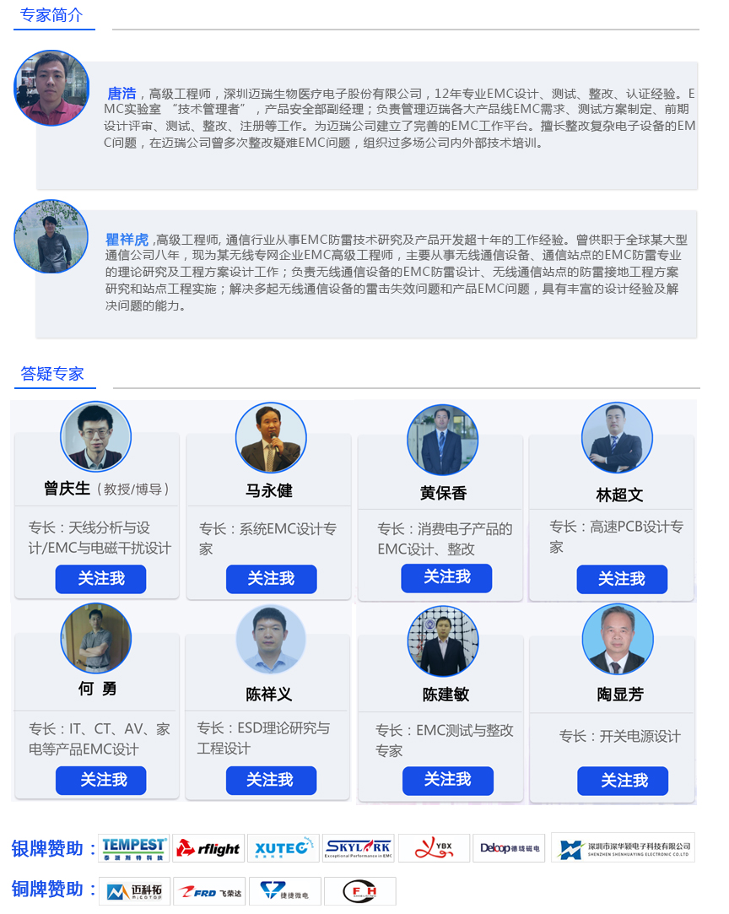

9月9日， 第二届电磁兼容（EMC）与电路保护技术研讨会-深圳站报名通道正式开启。由电磁兼容技术网和中国电工技术学会联合主办。是电磁兼容行业最具权威性的专业技术交流活动，2016年已在深圳、上海、成都、武汉、西安成功举办，参会人数达1527人，由于会议以高定位，高质量，紧密围绕前沿技术研讨开展，以助力行业创新发展为使命，已得到业内高度认可。
内容涉及通信、医疗、汽车电子、电动工具、军工、广播电视、LED照明等众多领域EMC技术，活动旨在通过技术分享，帮助工程师和企业交流技术、信息等，促进EMC行业良性互动和持续稳定发展。
时 间：2017年09月09日（8：30-18：30）
地 点：深圳 宝安区 新安四路198号 深圳宝立方国际酒店（5楼-中餐厅）
主办单位：电磁兼容技术网
联合主办：中国电工技术学会 陕西省电源学会电磁兼容与防护分会 广东省产品认证服务协会
